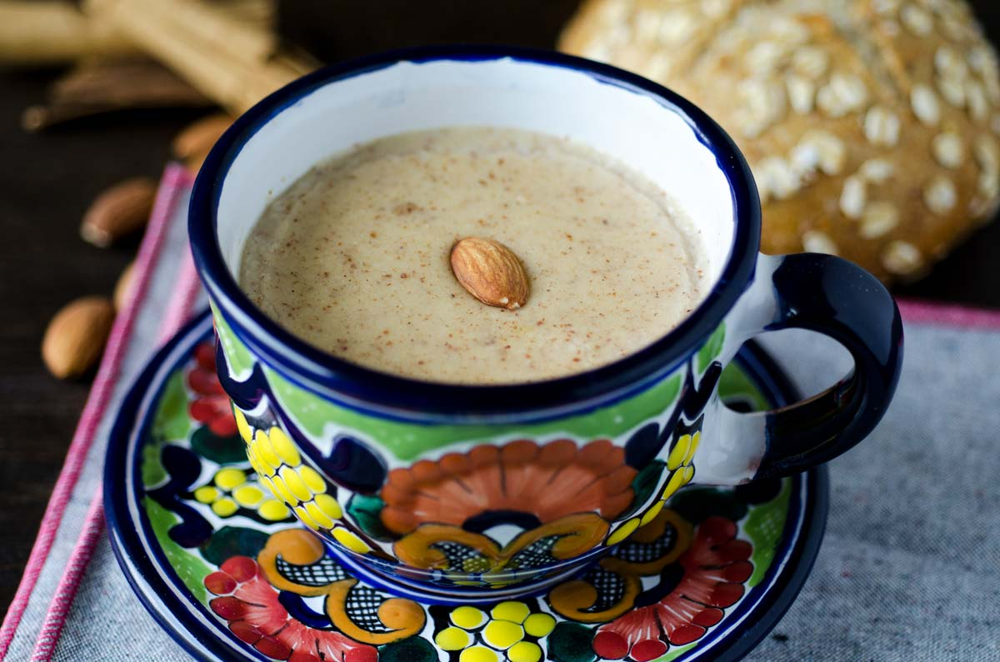

Atole de Maiz
Ingredientes
200 g masa de maíz blanco nixtamalizado
1 L agua
5g canela en rama
120 g azúcar
Elaboracion
Coloca la masa en la licuadora y licua con un tercio del agua hasta que quede bien disuelta. Agrega el resto del agua a la olla y hierve con la canela; agrega la masa disuelta de la licuadora. Mueve constantemente a fuego bajo hasta que hierva la preparación. Es importante que en esta parte de elaboración no dejes de mover constantemente, pues puede quemarse con facilidad. Una vez que haya hervido.
agrega el azúcar y mueve hasta que se disuelva.
sirve con el cucharon y disfruta.
MAS RECETAS
Receta de arroz con leche
Receta de pastel de 3 leches